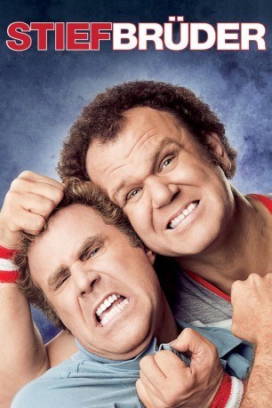
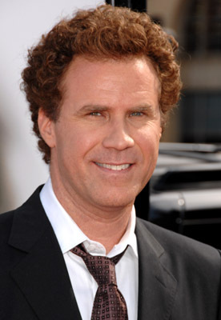
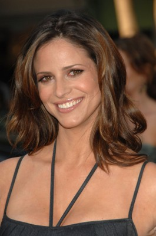
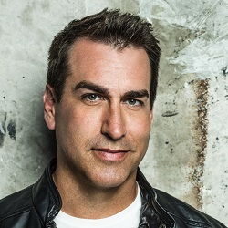
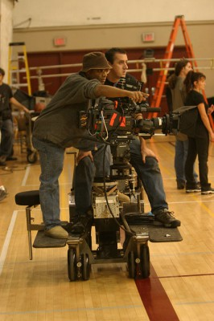
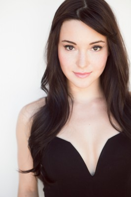

#2810 Stiefbrüder
Alternativ: Step Brothers
 
 IMDB-Wertung: 6.9 / 10
IMDB-Wertung: 6.9 / 10  Metascore: 51
Metascore: 51 
Das verwöhnte 39-jährige Mama-Söhnchen Brennan wohnt immer noch zu Hause bei seiner alleinerziehenden Mutter. Und auch der nicht minder verhätschelte 40 Jahre alte Dale lebt immer noch unter dem Dach seines Papas. Als sich jedoch die Eltern der beiden verzogenen "Jungs" ineinander verlieben und heiraten wollen, müssen sich die beiden wohlbehüteten Einzelkinder plötzlich mit unliebsamer Konkurrenz auseinandersetzen: ihrem Stiefbruder!
Jahr: 2008
Dauer: 97 Minuten
FSK: 12
Land: USA Studio: Columbia PicturesTonspuren: DD5.1 - ,
Untertitel: Deutsch,
Auflösung: 1080p (1920x800) Größe: 8232 MB
Genre: Komödie
Regisseur: Adam McKay
Drehbuch: Will Ferrell, Adam McKay, Will Ferrell, Adam McKay, John C. Reilly
Soundtrack: Jon Brion
Darsteller:
-  Will Ferrell als Brennan Huff
 John C. Reilly als Dale Doback
John C. Reilly als Dale Doback Mary Steenburgen als Nancy Huff
Mary Steenburgen als Nancy Huff Richard Jenkins als Dr. Robert Doback
Richard Jenkins als Dr. Robert Doback Adam Scott als Derek
Adam Scott als Derek Kathryn Hahn als Alice
Kathryn Hahn als Alice-  Andrea Savage als Denise
- Lurie Poston als Tommy
- Logan Manus als Chris Gardoki
- Travis T. Flory als Redheaded Kid
- Shira Piven als Nurse
- Seth Morris als Doctor
- Wayne Federman als Blind Man
- Danielle Schneider als Receptionist
 Gillian Vigman als Pam Gringe
Gillian Vigman als Pam Gringe Brian Huskey als Interviewer
Brian Huskey als Interviewer- Adam McKay als Man without Glasses
 Seth Rogen als Sporting Goods Manager
Seth Rogen als Sporting Goods Manager- Chris Henchy als First Homebuyer
 Ian Roberts als Male Therapist
Ian Roberts als Male Therapist- Erica Vittina Phillips als Second Homebuyer
 Phil LaMarr als Second Homebuyer
Phil LaMarr als Second Homebuyer-  Rob Riggle als Randy
 Jason Davis als TJ
Jason Davis als TJ Ken Jeong als Employment Agent
Ken Jeong als Employment Agent Horatio Sanz als Lead Singer
Horatio Sanz als Lead Singer- Kyle Felts als Wine Mixer Heckler
 Matt Walsh als Drunk Corporate Guy
Matt Walsh als Drunk Corporate Guy- Dmitri Schuyler-Linch als 6-Year-Old Derek
- Bryce Hurless als 9-Year-Old Brennan
-  Don Abernathy als Upscale Businessman , uncredited
- Denise Bradley als Recital Critic , uncredited
- Troy Butcher als Football Player , uncredited
- Jeremy Clark als Derek's Football Buddy , uncredited
- John D. Crawford als Bekins Mover , uncredited
- Michael Dane als Derek's Birthday Party Guest , uncredited
-  Krystal Ellsworth als Featured Dancer , uncredited
- Charlie Gelbart als Helicopter Girl , uncredited
- Carol Ilku als Shop Owner , uncredited
- Amanda Lee Jacoby als Student Back in the 80's , uncredited
- Christopher Karl Johnson als Wedding Guest / Dancer , uncredited
- Michelle Lenhardt als Upscale Shopper , uncredited
- Tara Macken als High School Gymnast , uncredited
- Kate Rappoport als Girl in Playground , uncredited
- Laimarie Serrano als TJ's Wife , uncredited
- Micah Sudduth als Mangina Chior Boy , uncredited
- Elizabeth Yozamp als Tiffany
- Lili Rose McKay als 7-Year-Old Girl
- Maria Quiban als TV Anchor
- Mary Catherine Hamelin als First Homebuyer
Datei: X:\2008(N-Z)\Stiefbrüder (2008, FSK12, 1920x800).mkv seit 18.12.2015
Festplatte: HD 2008(G-Z)-2009(A-F)
 Es gibt insgesamt 91 Filme in der Gruppe '2008(N-Z)'
Es gibt insgesamt 91 Filme in der Gruppe '2008(N-Z)'